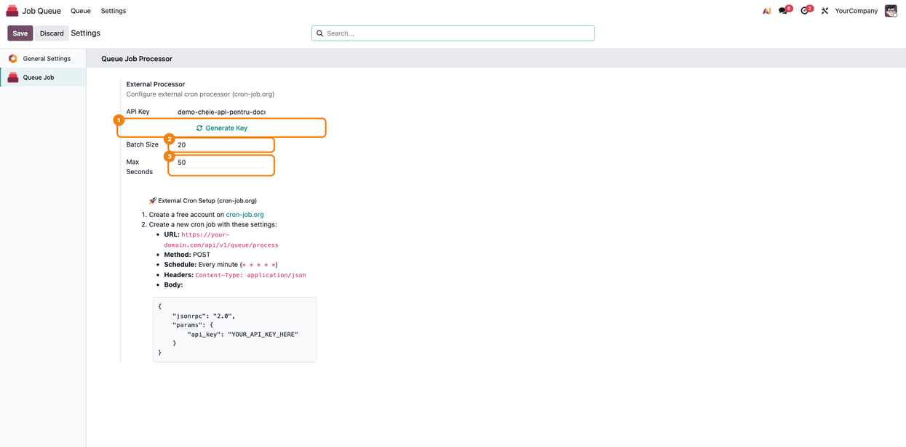
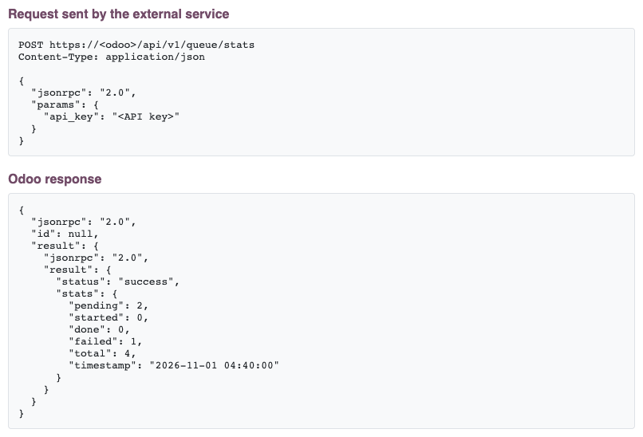
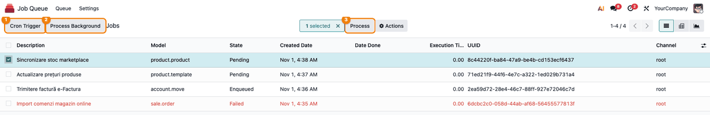
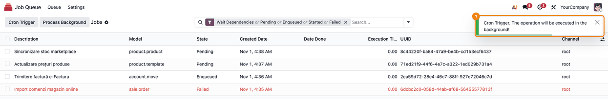

More apps by Terrabit
Other modules from the same publisher, built to work together. All apps →
Faster and more reliable background jobs
The module provides specific enhancements to the job queue functionality in Odoo, focusing on performance, reliability, and flexibility in job execution. Here's a detailed breakdown of the features: deltatech_queue_job
_acquire_specific_job) using the FOR NO KEY UPDATE SKIP LOCKED SQL clause. This allows multiple workers (internal cron or external API) to process the queue simultaneously without blocking each other, significantly increasing throughput._job_runner that respects configurable limits for batch size and execution time, preventing worker timeouts on platforms like Odoo.sh./api/v1/queue/process) designed for external trigger services (e.g., cron-job.org). This allows for processing intervals as frequent as every minute, bypassing the standard 5-minute Odoo cron limitation.ir.cron.trigger) whenever a job is created or its scheduled time (eta) is updated. This ensures that processing starts as soon as a job becomes eligible, rather than waiting for the next scheduled cron run.Queue Job > Settings allows administrators to:Batch Size (maximum jobs per run).Max Seconds (time budget per execution) to ensure stability.This module is specifically designed to address common challenges on the Odoo.sh platform:
Max Seconds) ensure that the job runner finishes its work gracefully before Odoo.sh kills the worker process, avoiding database inconsistencies.SKIP LOCKED ensures that multiple workers can process the queue in parallel without deadlocks, maximizing the use of available resources.This module is essential for high-volume Odoo environments. By decoupling the job runner from the standard Odoo cron schedule and providing optimized database locking, it ensures that your background tasks are processed as fast as possible with minimal overhead and maximum reliability.
External Job Processor Configuration
To process jobs every minute using an external service like cron-job.org:
Job Queue -> Settings. You can generate a secure key using the Generate Key button.Configure Batch Settings: (Optional) Adjust Batch Size (default 20) and Max Seconds (default 50) directly in the same settings screen, then Save.

Setup cron-job.org:
https://your-odoo-domain.com/api/v1/queue/process* * * * *)Content-Type: application/jsonjson
{
"jsonrpc": "2.0",
"params": {
"api_key": "YOUR_SECURE_KEY_HERE"
}
}
API Endpoints
POST /api/v1/queue/process
Parameters:
api_key (required): Authentication keybatch_size (optional): Maximum number of jobs to process (default: 20)max_seconds (optional): Maximum processing time in seconds (default: 50)Response: the result is wrapped twice, so the fields below are in result -> result of the
JSON body. The HTTP status is always 200, even for an invalid key or an error, which are reported in
the body as "status": "error"; alerts based on the HTTP status in the external service will not
catch them.
{
"status": "success",
"processed": 15,
"done": 13,
"failed": 1,
"postponed": 1,
"pending_count": 10,
"time_elapsed": 12.34,
"timestamp": "2026-03-18 04:40:00"
}
processed counts the jobs attempted in this call: done finished, failed ended in
the failed state and postponed were put back to pending for a retry.
POST /api/v1/queue/stats, with the same body and API key. It only counts the jobs and processes
nothing, which makes it a safe way to check the key before enabling the processing call.

Manual Processing
Open Job Queue -> Queue -> Jobs. The list header has the module's buttons:
The same buttons are on the job form header (there, Process Background is labelled Process (Thread)).

After Cron Trigger, a notification confirms the request: green when the run is scheduled, yellow "CRON Trigger already exists" when a run is already scheduled, red "No CRON Trigger found" when the queue cron is missing.

Our 600+ apps on the Odoo Apps Store are used in Odoo implementations across Europe, the Americas, Asia and Africa — by companies we have never even met. That is the advantage of building modules that simply work.
Questions about this module, or need it adapted to your processes? Write to us — the developers who build it will answer.
Terrabit support →Other modules from the same publisher, built to work together. All apps →